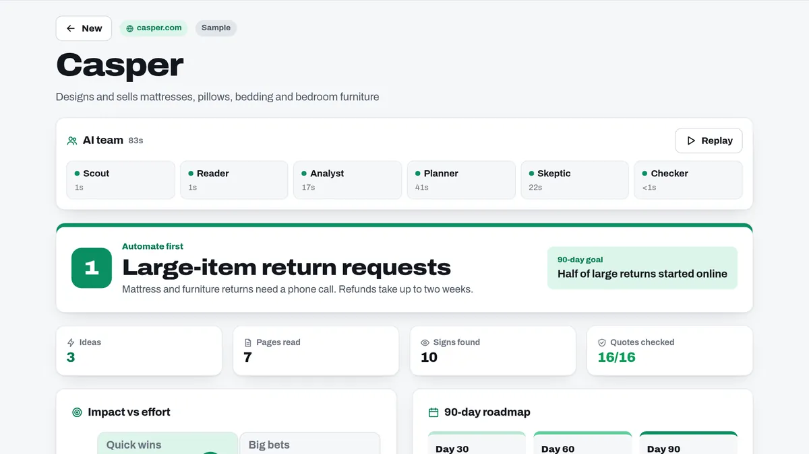

First 90
Any company site. A 90-day automation plan.


Automate firstOne clear top pick
Impact vs effortEvery idea on one chart
Interview questionsTests for each idea
How it works
ScoutPicks the pages
AnalystSpots manual work
PlannerRanks the ideas
SkepticCuts weak ideas